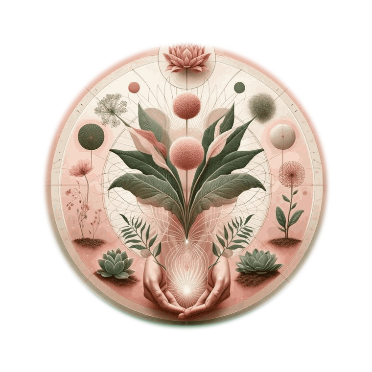

Meet Annika Tara
Hello, I'm Annika.
With a Master's in Clinical Mental Health Counseling, my approach is grounded, relational, and integrative. I bring together somatic awareness, mindfulness, and experiential practices to support meaningful growth and self-understanding.
I'm also a 200-hour trained yoga teacher and a guide in nature-based immersion, attuning others to the intelligence and intimacy of the living world. My work invites a deepening of eco-intimacy — how we relate to ourselves, one another, and the ecosystems we are part of.
I facilitate workshops on boundaries and desires, consensual sensuality, and conscious sexuality — supporting individuals and couples in cultivating presence, agency, and authentic connection.
As an artist and creative guide, I support others in rekindling their birthright expression and embodied imagination, inviting creativity as a pathway toward a more connected and enlivened life.
Book a free consultation →- Master'sClinical Mental Health Counseling
- 200-hourTrained yoga teacher
- GuideNature-based immersion
- ArtistCreative & embodiment guide
Let's begin together
A free, no-pressure consultation is the best place to start.
Book a free consultation